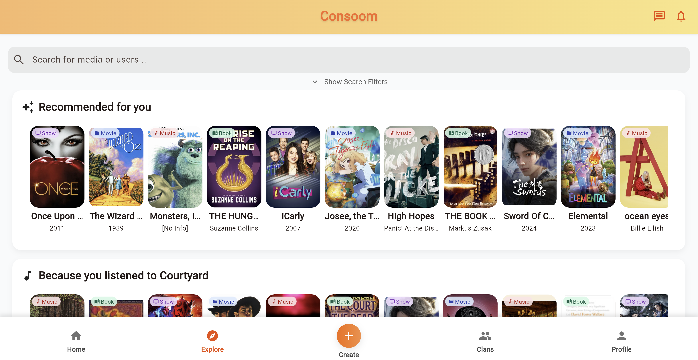

PORTFOLIO
FEATURE
CONSOOM
Senior Capstone Project
As part of my senior project in university, I brainstormed a social media platform for multimedia recommendation and review. The process included:
- Marketing the initial idea to potential team recruits.
- Interviewing candidates to build an effective and like-minded team.
- Documenting the development process and final outcomes.
- Developing and testing features to ensure a high-quality user experience.
- Conducting user studies and adjusting the platform experience as needed.
My technical contributions included:
- Implementing the user interface using Dart in Flutter.
- Developing backend logic with Python for bookmarking features and post creation.
- Designing and implementing community features such as forums and progress leaderboards.
- Optimizing the application for performance and scalability.
